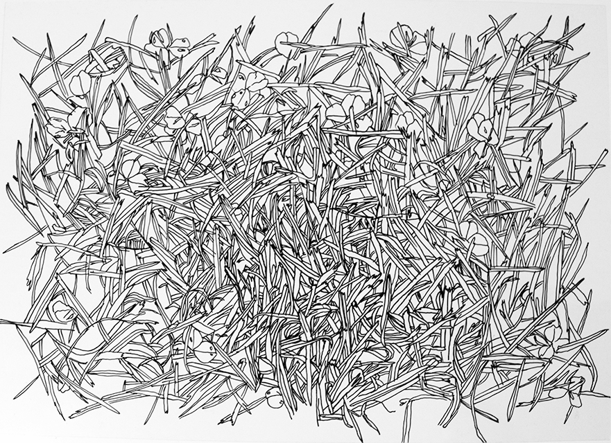

Mintarendszerek Milánóban
Az Új Nemzeti Kiválóság Program keretein belül megvalósult kutatási projektemet Milánóban valósítottam meg. Célom a város feltérképezése volt, mintarendszereinek gyűjtése által. Természetes folyamat egy hosszabb utazás során, a felfedezés vágya, vázlatok, akvarellek készítése. Régi hagyomány, hogy a művészek tanulmányutak alkalmával a látottakat rögzítették, ezek későbbi műveik vázlatai lettek. A művészet által való felfedezés hagyományát megtartva, ám technikailag, gondolkodásmódban kissé elrugaszkodva készítettem munkáimat.
A nagyvárosban érzékeket elárasztó ingerek tömege, feldolgozhatatlansága jelenik meg.
Rövid utak alkalmával lehetetlen vállalkozás ennek befogadása, de a közel egy éves itt tartózkodásom sem tette lehetővé a teljes körű megismerést.
Milánó roppant komplexitása felfoghatatlan, feldolgozhatatlan, ezért oly misztikus, ezért szippant magába.
Csak részeit, egységeit, tér szeleteit, szubkulturális csoportjait érthetjük meg vagy figyelhetjük meg, egészében átfogni szinte lehetetlen.
Az általam felfedezett terület, amit feltérképzetem és rajzaimat elkészítettem a mindennapi mozgásterem, azok az útvonalak, amiket nap mint nap megtettem,
ahol rutinosan mozogtam, és már jól ismertem a sajátosságait.
Az embernek alapvető törekvése, hogy rendet vigyen az őt körülvevő világba fizikai és szimbolikus tértagolás,
térbeélés által, ezzel mintegy univerzumot teremtve a káoszból, birtokba véve, kisajátítva, személyes tartalommal megtöltve azt.
Én a minták gyűjtésével, a város elemeinek mindennapi rajzolásával igyekeztem magamévá tenni a teret, amelyben élek.
A nagyvárosra általában jellemző a felfokozott képi ingerek jelenléte, a tárgyak sokfélesége,
általában a képi elemek nagy száma és változékonysága.
Rengeteg felület jelenik meg, ezek rétegződnek egymásra, ismétlődnek. Fel lehet fedezni az ismétlődő motívumokat, a leggyakoribb elemeket.
Utazásom során A/4-es fóliákkal fedeztem fel a város adottságait.
A lapokat letettem bizonyos felületekre és a térbeliséget mellőzve rajzoltam át az adott látványt.
Az alap koncepciómat, hozzáállásomat előre meghatároztam, a felfedezés izgalma a helyszínen történt meg,
hiszen egy számomra ismeretlen területről volt szó. Rajzaimon a természetben található rend érdekelt,
az ismétlődő motívumok.
A transzparens fóliákra való rajz mellett elkezdtem ezekkel a mintázatokkal grafikákat készíteni színes lapokra.
Itt már szabad kézzel, mivel a minta rajzolási módját már elsajátítottam. Ez célom volt és a megvalósítás működött,
az új minták beépültek az eddig ismert motívumrendszerembe. A valóságtól eltérő színekkel dolgoztam, ezzel tovább absztrahálva,
mintává, motívummá alakítva a valóságból kiinduló grafikákat. A valóság csak egy indikátorrá vált ezeknél a képeknél,
amitől igyekeztem minél távolabb sodródni.